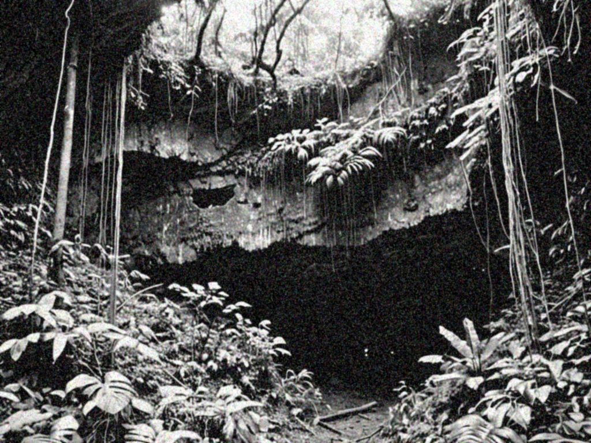
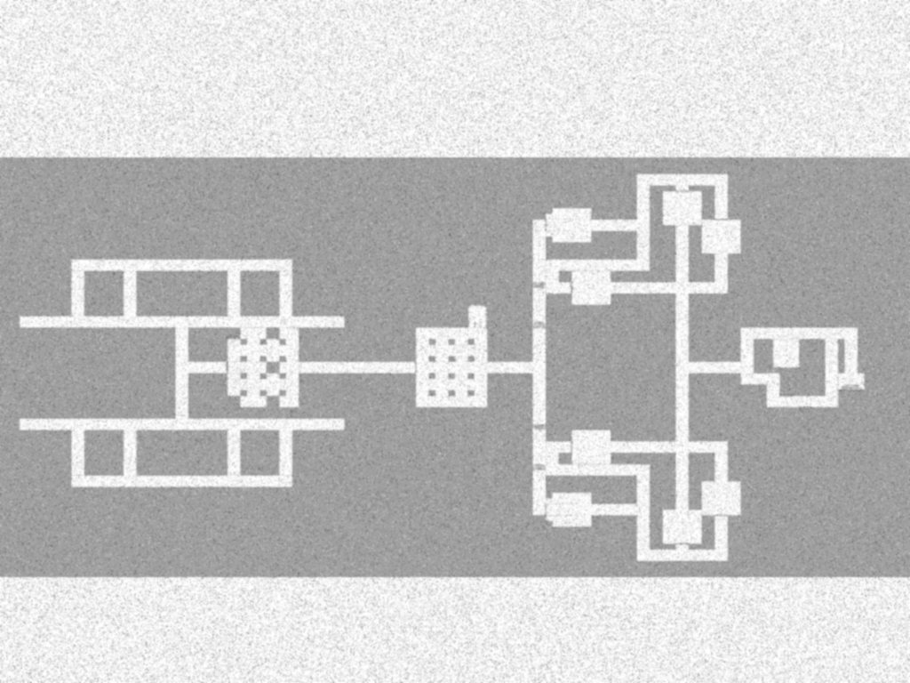
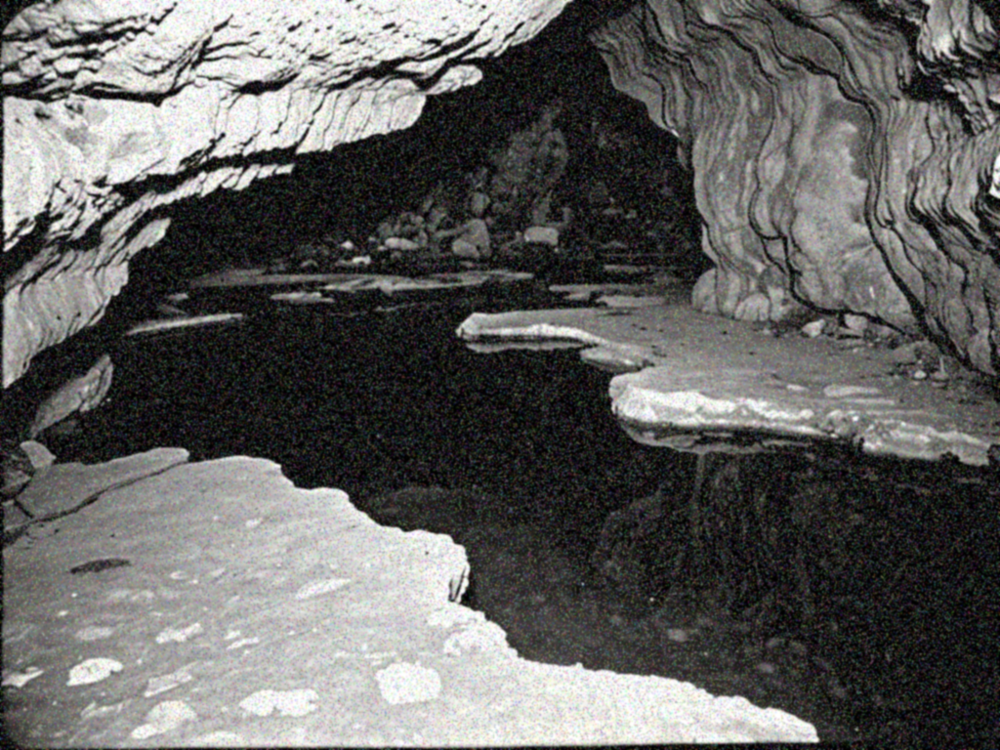

BADAN TENAGA ALTERNATIF
Republik Indonesia
LAPORAN TEKNIS INTERNAL
No. Dokumen: RD-02//1971
PERIHAL
SURVEI DAN EVALUASI KELAYAKAN LOKASI
FASILITAS PEMBANGKIT LISTRIK TENAGA GERAK ABADI (PLTGA)
BADAN TENAGA ALTERNATIF
RD-02 · Laporan Teknis Internal
DAFTAR ISI
1. RINGKASAN EKSEKUTIF
Sebagaimana telah diuraikan dalam RD-01, Situs menunjukkan sifat fisik yang belum dapat dijelaskan melalui kerangka keilmuan yang tersedia saat ini. Tim Divisi Riset menyimpulkan bahwa properti unik lokasi ini berpotensi dimanfaatkan sebagai sumber energi gerak abadi (perpetual motion) — sebuah sistem yang, apabila berhasil direkayasa, dapat menghasilkan keluaran listrik dalam jumlah yang secara teoretis tidak terbatas.
Mengingat kebijakan efisiensi anggaran riset yang berlaku sejak , proyek ini diarahkan untuk memenuhi target operasional yang ditetapkan oleh pada bulan mendatang. Tim menilai target tersebut dapat dicapai dengan mempercepat sejumlah tahapan uji kelayakan yang dalam kondisi normal akan memerlukan waktu lebih panjang.
Selain itu, sejumlah warga di sekitar lokasi turut menyampaikan keterangan mengenai sifat-sifat lain dari situs tersebut di luar potensi kelistrikannya — keterangan yang, meskipun bersifat anekdotal, dinilai cukup konsisten untuk ditindaklanjuti. Divisi Riset merekomendasikan agar fasilitas ini turut difungsikan sebagai pusat kajian lanjutan atas kemungkinan properti lain dari situs dan metode pemanfaatannya, di luar lingkup pembangkitan listrik.
2. RIWAYAT DAN AKUISISI LOKASI

Gambar 2.1 — Kondisi mulut gua Situs sebelum dimulainya konstruksi, direkam pada masa survei awal.
Situs terletak di kawasan . Penduduk setempat diketahui jarang memasuki kawasan ini, dengan sebagian besar warga mengaitkan keengganan tersebut dengan kepercayaan mistis turun-temurun mengenai kawasan mulut gua.
Proses akuisisi lahan berlangsung relatif efisien dari segi anggaran: sejumlah kepala keluarga bahkan menolak tawaran kompensasi yang diajukan, memilih untuk tidak lagi berurusan dengan lahan tersebut sama sekali. Hal ini turut membantu tim dalam memenuhi target efisiensi anggaran akuisisi lahan untuk periode berjalan.
Sejumlah nisan yang berada di jalur akses utama menuju mulut gua turut dipindahkan guna mempermudah proses konstruksi. Berdasarkan catatan tokoh setempat, nisan-nisan tersebut tidak menandai pemakaman yang sesungguhnya, sehingga proses relokasi dapat dilaksanakan tanpa hambatan administratif maupun sosial berarti.
Bentuk alami gua akan memerlukan penyesuaian struktural yang cukup luas agar sesuai dengan kebutuhan operasional fasilitas — lihat Bagian 3 (Survei Lapangan) untuk rincian rencana remodeling.
3. SURVEI LAPANGAN
3.1 Kondisi Umum
Survei lapangan dilaksanakan selama hari oleh tim gabungan Divisi Riset & Eksplorasi bersama Divisi Teknik Sipil. Struktur gua alami memiliki kedalaman yang belum dapat dipastikan sepenuhnya; peralatan pengukuran standar (pita ukur, tali berbandul) menunjukkan hasil yang tidak konsisten pada beberapa titik pengukuran (lihat Bagian 4).
Lorong-lorong alami cenderung sempit dan tidak beraturan, tidak memungkinkan akses alat berat maupun penempatan instalasi turbin dalam kondisi aslinya.
3.2 Rencana Remodeling
Agar sesuai dengan kebutuhan operasional, struktur gua akan mengalami penyesuaian menyeluruh, meliputi:
Tim Teknik Sipil mencatat bahwa proses remodeling perlu dilakukan secara bertahap, mengingat konfigurasi lorong pada beberapa titik menunjukkan kecenderungan untuk antar sesi pengukuran, meskipun tidak terdapat aktivitas konstruksi maupun seismik yang tercatat pada periode tersebut. Temuan ini dibahas lebih lanjut dalam Bagian 4.

Gambar 3.1 — Sketsa awal denah rongga inti berdasarkan hasil survei. Tata letak final dapat berbeda menyesuaikan kebutuhan konstruksi.
3.3 Sistem Air dan Potensi Kelistrikan
Berbeda dari asumsi awal, kebutuhan air kawasan tidak lagi dipandang sekadar sebagai isu sanitasi. Tim Riset menemukan bahwa (lihat RD-01, Bagian ). Fenomena ini membuka kemungkinan pemanfaatan air bukan hanya sebagai penunjang, melainkan sebagai media utama penggerak turbin pembangkit.

Gambar 3.2 — Kolam-kolam alami pada rongga bagian dalam, sebelum dilakukan pelapisan keramik dan penyesuaian struktural.
Rencana awal mengarah pada pembangunan sejumlah kolam penampungan pada tingkat kedalaman terpisah ("Lantai 2"), yang akan berfungsi ganda sebagai:
Tim Teknik mencatat bahwa debit air yang berhasil diukur pada uji coba awal tidak sebanding dengan volume air yang dimasukkan ke dalam sistem — dengan selisih yang meningkat pada setiap pengulangan uji. Hipotesis sementara menyebutkan kemungkinan kebocoran pada titik pengukuran, meskipun pemeriksaan lapangan tidak menemukan indikasi kebocoran fisik pada segmen yang diperiksa. Temuan ini akan dibahas lebih lanjut dalam Bagian 4.
Apabila hipotesis awal terbukti pada tahap uji coba lanjutan, sistem ini berpotensi menjadikan Situs sebagai fasilitas pembangkit dengan efisiensi jauh melampaui standar pembangkit listrik tenaga air konvensional.
4. DATA PENGUJIAN: MASSA JATUH
Rincian metodologi dan hasil pengujian awal atas sifat pergerakan massa pada rongga inti telah dibahas secara menyeluruh dalam RD-01, Bagian –. Bagian ini hanya memuat rangkuman singkat sebagai rujukan silang bagi keperluan perencanaan konstruksi.
Data pengujian lanjutan yang dilaksanakan selama periode survei kelayakan tercantum pada Lampiran A.
Tim Riset menegaskan bahwa temuan pada bagian ini tidak memengaruhi kelayakan proyek secara keseluruhan, dan telah diperhitungkan dalam proyeksi keluaran energi pada Bagian 1.
5. DATA PENGUJIAN: TEKANAN UDARA
Sebagaimana dengan Bagian 4, rincian pengujian tekanan dan aliran udara pada rongga inti telah dibahas dalam RD-01, Bagian . Bagian ini memuat catatan tambahan sehubungan dengan dampaknya terhadap rencana ventilasi fasilitas.
Sistem ventilasi mekanis tetap direkomendasikan untuk dipasang di sepanjang lorong utama, meskipun tim Teknik mencatat bahwa aliran udara alami pada kawasan ini kemungkinan telah mencukupi kebutuhan sirkulasi tanpa bantuan tambahan.
7. REKOMENDASI
Berdasarkan temuan survei kelayakan sebagaimana diuraikan dalam laporan ini, Divisi Riset & Eksplorasi Energi Alternatif merekomendasikan agar proyek pembangunan Fasilitas Pembangkit Listrik Tenaga Gerak Abadi (PLTGA) di Situs dilanjutkan ke Tahap 2 (Konstruksi Awal), dengan pertimbangan sebagai berikut:
Tim merekomendasikan agar laporan ringkas untuk disusun terpisah dari dokumen ini, dengan mengecualikan rincian pada Bagian 4 hingga 6, guna menjaga kelancaran proses persetujuan anggaran Tahap 2.
Disetujui untuk diteruskan ke tahap berikutnya.